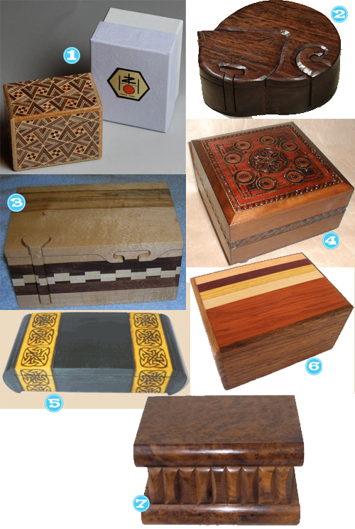

I think these little gems are the coolest things. I think they can act as a fun, functional hiding places for some of your more precious items. Some of these boxes take 5, 10 and sometimes up to 20 different moves to merely open them.

- 10 Step Japanese Puzzle
- Indian Cat Puzzle
- Keepsake Puzzle Box – I own one almost identical to this, love it. Fun to just disassemble and reassemble.
- 3 Step Polish Box
- Large Celtic Design Secret Box
- 4 Step Japanese Box
- 5 Move Morrocan Box


Recent Comments